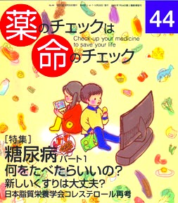

No.44 [特集] 糖尿病パート１ 何をたべたらいいの？ 2011年10月 発行
あのね
おしっこがね
あまーくなるんだよ
あまーいおしっこが
でるんだよ
なぜだかしってるかい？
むかしのひとは
りゆうがわかないから
あまーいものを
たくさんたくさん
たべつづけたんだとさ
いまではそのりゆうがわかっているから
いろんなやりかたがあるんだよ
くすりをのむ？ ちゅうしゃする？
たべものにきをつける
あなたならどうする？
もくじ
Main Feature 特集 糖尿病 PART1
■ 座談会
糖質制限食って、なあに？ 浜 六郎／春本幸子／宮前千雅子／山本みどり
■ 学会基準の6:2:2は糖尿病をつくる？
■ 必要な栄養素を過不足なく、毎食、楽しく！ 山本みどり＆編集部
■ カーボカウントとは？
■ 今さらだけど聞きたい知りたい
糖尿病って、どういうもの？ 浜 六郎さんに聞く
■ 食べ物以外の生活習慣で 特に必要な注意 浜 六郎＆編集部
■ アクトス（ビオグリタゾン製剤）は販売中止を 木元康介＆浜 六郎
■ 速報
薬剤の評価 浜 六郎
Second Feature
■ 行ってきました
日本脂質栄養学会 コレステロールを再考する 坂口啓子
お互いを知ろう、語りあおう 宮前千雅子
Topics トピック
■ HPVワクチンの評価 浜 六郎
Series 連載
■ リレーエッセイ イレッサ訴訟：原告たちの泣き笑い 近澤昭雄
■ みんなのやさしい生命倫理(44) 生老病死⑭ 谷田憲俊
■ 新・市民の視点 社会貢献する生き方をあきらめない 石井政之
Others
■ コーヒー無礼区
■ 医師国家試験に挑戦しよう！⑩
■ 医師国家試験の解答
■ 質問箱①真空パックで菌が増える？ 死ぬ？
②乳児の食欲増進にペリアクチンを処方されたが
■ 読者の声
■ 書評
■ バックナンバー一覧 / 書籍申込用紙
■ 編集後記/奥付